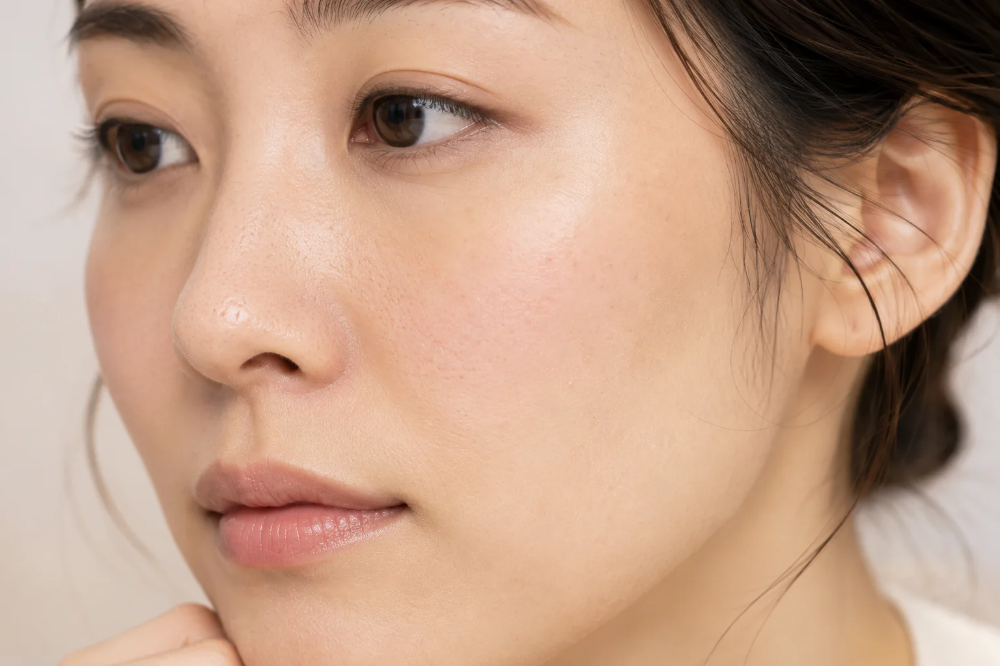

Trial Set · PR
40代からのケアを
まず7日間試す
オルビスユー ドットの洗顔料・化粧水・保湿クリームを、朝晩の3ステップとして試せる初回限定セットです。
セット内容を見る公式情報を基準に、大人のコスメ選びを整理する比較メディア
COMPARISON GUIDES
Trial Set · PR
オルビスユー ドットの洗顔料・化粧水・保湿クリームを、朝晩の3ステップとして試せる初回限定セットです。
セット内容を見るCleansing
メイクの濃さ、洗い上がり、W洗顔の要否から選びやすく整理。毛穴汚れを落とす目的でも、こすりすぎない使い方を優先します。
比較を見る
Toner
医薬部外品、しっとり感、容量、アルコール無添加表示を比較します。
比較を見る
Serum
薬用美白美容液と、乾燥によるくすみに使う化粧品を分けて比較します。
比較を見る
Wash
酵素パウダー、泥スクラブ、泡立てないジェルを比べます。
比較を見る
K-Beauty
ナイアシンアミド、グルタチオン、プロポリスなどを目的別に比較します。
比較を見るUV Care
毎日用とレジャー用を、容量・落とし方・耐水性で比較します。
比較を見るMoisturizer
化粧水の後の保湿を、容量・処方表示・使用感で比べます。
比較を見るSensitive Toner
しっとり感、医薬部外品、無添加表示、レフィルを比べます。
比較を見る
Cleansing
オイル・バーム・ミルク・ジェルを容量と使い方で比較します。
比較を見る
Serum
皮脂、乾燥によるくすみ、キメの乱れを目的別に比較します。
比較を見るIngredient Cream
ハイドロキノン、レチノール、アゼライン酸を、目的・濃度・使う時間から整理します。
比較を見るすべての記事は、公式情報を基準に公平に比較しています。